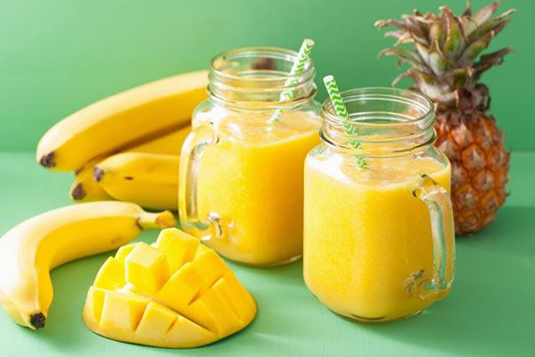

Tropical Fruit Smoothie Recipe

The Only Tropical Fruit Smoothie Recipe You Will Ever Need!
This fruit smoothie is bursting with flavour and will have you wanting more.
It's packed with fruits rich in vitamin-C, an essential nutrient, as well as a slew of other vitamins and minerals that will not only nutrify your body but make for a delicious and refreshing drink.
Ingredients
- 1 pineapple
- 1 mango
- 3 bananas (ideally ripe & yellow in color)
- Add as much or as little ice as you need.
Steps
- Wash your fruit thoroughly in water.
- Cut off the exterior skin of the fruit.
- Place the cut fruit into the blender.
- Add ice and blend until silky smooth.
Then enjoy!